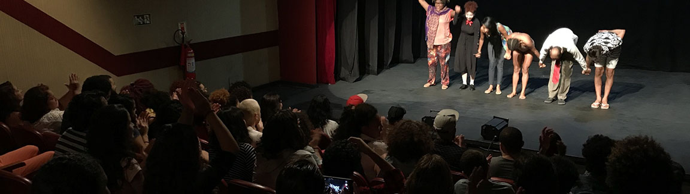

Incentivo Fiscal
A Lei Nacional de Incentivo à Cultura ("Lei Rouanet")
Principal ferramenta de fomento à Cultura do Brasil, a Lei de Incentivo à Cultura contribui para que milhares de projetos culturais aconteçam, todos os anos, em todas as regiões do país. Por meio dela, empresas e pessoas físicas podem patrocinar espetáculos – exposições, shows, livros, museus, galerias e várias outras formas de expressão cultural – e abater o valor total ou parcial do apoio do Imposto de Renda. A Lei também contribui para ampliar o acesso dos cidadãos à Cultura, já que os projetos patrocinados são obrigados a oferecer uma contrapartida social, ou seja, eles têm que distribuir parte dos ingressos gratuitamente e promover ações de formação e capacitação junto às comunidades. Criado em 1991 pela Lei 8.313, o mecanismo do incentivo à cultura é um dos pilares do Programa Nacional de Apoio à Cultura (Pronac), que também conta com o Fundo Nacional de Cultura (FNC) e os Fundos de Investimento Cultural e Artístico (Ficarts). Saiba mais sobre o Programa.
Como funciona?
Um produtor cultural, artista ou instituição, como um museu ou teatro, por exemplo, planeja fazer um evento cultural – um festival, uma exposição, uma feira de livros, entre outros. Para tornar a ideia dele mais atrativa para patrocinadores, ele pode submetê-la à análise da Secretaria Especial da Cultura do Ministério da Cultura para receber a chancela da Lei de Incentivo à Cultura. Se a proposta apresentada for aprovada, o produtor vai poder captar recursos junto a apoiadores (pessoas físicas e empresas) oferecendo a eles a oportunidade de abater aquele apoio do Imposto de Renda. O governo abre mão do imposto (renúncia fiscal) para que ele seja direcionado à realização de atividades culturais. Com isso, ganha o produtor cultural, ganha o apoiador e ganham os brasileiros, que terão mais opções à disposição e mais acesso à cultura.
1) Apresentação de proposta: o proponente (responsável pelo projeto) insere uma proposta cultural no Sistema de Apoio às Leis de Incentivo à Cultura (Salic), de forma eletrônica.
2) Análise de admissibilidade: o Ministério da Cultura (MinC) e/ou a Secretaria Especial da Cultura (SECULT/Ministério do Turismo) realizam a análise de admissibilidade da proposta a partir de critérios objetivos estabelecidos pela Lei 8.313/91 e pela Instrução Normativa em vigor. Se admitida, a proposta se transforma em projeto e recebe autorização para captação de recursos incentivados, a partir de publicação no Diário Oficial da União (DOU).
3) Análise técnica: o projeto é encaminhado à análise técnica por parecerista da área cultural do projeto.
4) Análise pela CNIC: Após emissão do parecer técnico, o projeto cultural é apreciado pela Comissão Nacional de Incentivo à Cultura (CNIC), órgão consultivo do Ministério da Cultura, que homologa a execução do projeto. Saiba mais sobre a CNIC.
5) Decisão final: o ministro de Estado da Cultura, em última instância, decide quanto à aprovação ou rejeição do projeto cultural. Historicamente, por convenção, o Ministério acompanha a decisão do órgão consultivo.
6) Captação: após a aprovação do projeto, cabe ao proponente encontrar as empresas que apoiarão sua ideia. Quando conseguir captar 20% do valor total aprovado, pode iniciar a execução da proposta conforme detalhado no projeto.
7) Execução: é a realização do projeto, quando o proponente entra em contato com fornecedores, artistas e outros prestadores de serviço que irão ajudar a executar a proposta. Também envolve a realização em si do espetáculo, show, festival, montagem e visitação de exposições, impressão de livros, etc.
8) Prestação de contas: após o término do projeto, o proponente precisa prestar contas de tudo o que foi realizado: como os recursos foram aplicados, como os objetivos e resultados do projeto foram alcançados, quantas pessoas foram atingidas pela proposta, qual foi a contrapartida social oferecida – tudo acompanhado por notas fiscais, comprovantes de transferência, panfletos, anúncios, matérias de jornal, fotos, etc.
A inscrição de um projeto na Lei de Incentivo à Cultura é feita pelo Sistema de Apoio às Leis de Incentivo à Cultura (Salic). No sistema, é preciso cadastrar a proposta e descrevê-la detalhadamente, relatar suas razões e objetivos, especificar como e em quanto tempo será executada, como será divulgada, quais profissionais e empresas estarão envolvidos nesse processo e quanto custará sua execução, detalhando item a item do orçamento. Também é preciso acrescentar as ações de contrapartida social que serão oferecidas.
São aceitos projetos de incentivo à formação artística e cultural; fomento à criação artística; preservação e difusão do patrimônio artístico, cultural e histórico; estímulo ao conhecimento de bens e valores culturais e de apoio a outras atividades culturais e artísticas. Ou seja, é possível propor a restauração ou construção de um centro cultural, planos anuais de manutenção de espaços culturais, orquestras, museus, companhias de teatro e dança, construção de bibliotecas e de projetos literários itinerantes, produção de shows, feiras, espetáculos, livros, festivais, música, etc.
Qualquer pessoa pode ser um proponente, que é o termo que designa a pessoa responsável por apresentar, realizar e responder pelo projeto cultural. Pode ser uma pessoa física com atuação na área cultural ou pessoa jurídica de direito público ou privado, com ou sem fins lucrativos, como uma empresa, produtora, instituição ou fundação, cujo ato constitutivo ou instrumento congênere disponha sobre sua finalidade cultural.
Onde posso me informar melhor?
- Portal oficial da Lei Nacional de Incentivo à Cultura (Lei Rouanet)
- SALIC - Sistema para cadastro e gestão de projetos
- Versalic - Banco de dados do sistema para cadastro e gestão de projetos
- Dúvidas sobre como se inscrever? Entre em contato com o Suporte SALIC
- Lei de Incentivo à Cultura do Rio de Janeiro
- Patrocínio pelo Fundo Estadual de Incentivo à Cultura do Rio de Janeiro